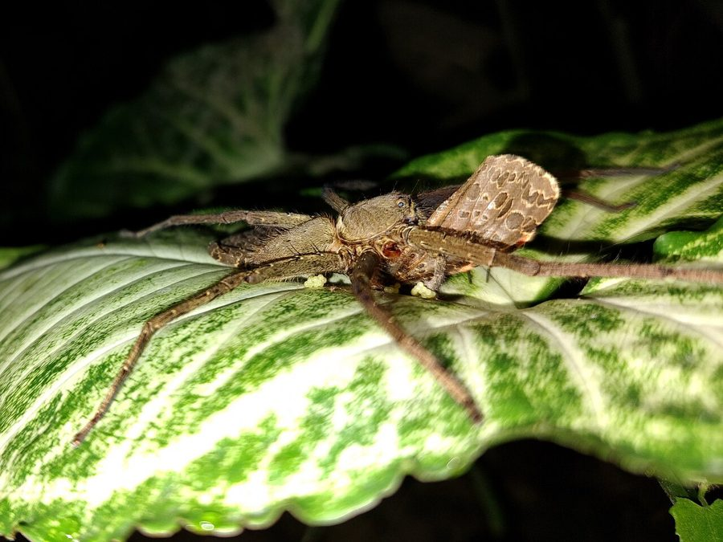

कैस्टर वूली बियर पतंगाCastor Woolly Bear Moth
Olepa ricini · Erebidae · INS-0161

- Scientific name वैज्ञानिक नाम
- Olepa ricini (Fabricius, 1775)
- Family कुल
- Erebidae
- Hindi हिंदी
- कैस्टर वूली बियर पतंगा
- Local names स्थानीय नाम
- castor woolly bear moth, moth
- Status here यहाँ की स्थिति
- native
- Movement आवागमन
- Resident, here all year
- Known from कहाँ दर्ज
- Others have published records from the wider Awadh–Purvanchal plain, none yet from Basti–Ayodhya अवध–पूर्वांचल से दूसरों के प्रकाशित अभिलेख, बस्ती–अयोध्या से अभी नहीं
- IUCN IUCN
- not evaluated
- Review समीक्षा
- audited and independently read
When to look कब देखें
Present all year. साल भर मौजूद।
कैस्टर वूली बियर पतंगा / Castor Woolly Bear Moth
Olepa ricini (Fabricius, 1775) — Erebidae
कैस्टर वूली बियर पतंगा — काली और लाल या पीली पट्टियों वाली एक माहवर। इसके बालों जैसे लार्वा को "ऊन वाली तितली" कहते हैं। सदाबहार और अरहर की खेत में दिखता है। बड़े पंखों वाली काली रात की तितली है।
Quick Identification त्वरित पहचान
| Feature | Description | ||
|---|---|---|---|
| Wingspan | 32–40 mm | ||
| Forewing colour | Black to dark brown with yellow or white transverse bands | ||
| Hindwing | Reddish or dark brown; contrast with forewing bands | ||
| Body | Stout, covered in hair-like scales | ||
| Larva | Densely hairy or bristly; black with reddish or yellow bands; 25–35 mm long | ||
| Larval behaviour | Gregarious; feed conspicuously on host leaves | ||
| Habitat | [[castor\ | Castor]] oil plant, neem, [[gular\ | gular]], and other plants; fields and gardens |
Field tip: In monsoon and early post-monsoon, look for densely hairy black caterpillars with bright bands on castor plants or neem. The adult moth is nocturnal; caught at light or found resting on vegetation during the day.
हिंदी — कैसे पहचानें: अरहर या सदाबहार के पत्ते पर बाल वाला काला लार्वा, पीले या लाल रंग की लकीरें। रात को कृत्रिम प्रकाश पर आती है।
Morphology आकारिकी
Biometrics:
| Measurement | Range |
|---|---|
| Adult female wingspan | 34–40 mm |
| Adult male wingspan | 32–36 mm |
| Larva length | 25–35 mm |
| Pupa length | 18–22 mm |
Adult: Medium-sized moth; forewings dark brown to black with transverse yellow or whitish bands; hindwings reddish-brown or dark. Body and wings covered in hair-like scales giving a characteristic woolly appearance. Males typically smaller than females. Scales of wings are flattened, producing a matte finish.
Larva: Elongate, barrel-shaped, densely covered in long hair-like bristles arranged in tufts and clusters. Ground colour black or dark brown; conspicuous bright yellow or reddish bands around body segments. Head dark; thoracic legs short.
Pupa: Brown, cylindrical, relatively smooth; formed in loose cocoon of larval hairs and silk.
हिंदी: बड़ी रात की तितली, काली-भूरी, धारियों वाली। लार्वा बाल-बिछौना लगा होता है, चेतावनी का रंग (काला पीला/लाल)।
Behaviour & Ecology व्यवहार और पारिस्थितिकी
The Castor Woolly Bear Moth is a nocturnal species attracted to artificial lights. Females are fecund, laying eggs singly or in small clusters on host plants; larvae are gregarious and feed openly on foliage. The hairy larval body likely provides protection from some predators and parasitoids; the conspicuous colouration advertises distastefulness (the larva can store compounds from its host plants, particularly from castor oil plant which contains ricin-related compounds). The species shows multiple overlapping generations per year under tropical conditions, with populations peaking during the monsoon and early post-monsoon months (June–October). It is widespread in the Indian subcontinent and is a common component of agro-ecological systems.
The adult is a generalist feeder on nectar and possibly tree sap. Larval hosts include castor oil plant (Ricinus communis), neem (Azadirachta indica), gular (Ficus glomerata), and a range of other plants. The species sometimes reaches pest levels on castor in cultivated areas, particularly when host-plant populations are high and natural enemies are suppressed.
हिंदी: रात को विद्युत प्रकाश पर आती है। लार्वा सैकड़ों की संख्या में अरहर या सदाबहार के पत्ते खा जाते हैं। सालभर दो से तीन पीढ़ियाँ।
Life Cycle / Phenology जीवन चक्र
| Stage | Duration | Notes |
|---|---|---|
| Egg | 4–6 days | Laid singly on host leaves |
| Larva | 20–25 days | Gregarious; conspicuous feeding; five instars |
| Pupa | 8–12 days | In loose cocoon; may overwinter |
| Adult | 10–20 days | Nocturnal; attracted to light; oviparous |
| Cycle | 35–45 days | Multiple generations May–November in eastern UP |
हिंदी: अंडा 4–6 दिन, लार्वा 3 हफ़्ते, प्यूपा 10 दिन। गर्मी और बारिश में 3–4 पीढ़ियाँ।
Host Plants or Prey आहार
Primary hosts:
- Castor oil plant (Ricinus communis) — the plant for which the species is named
- Neem (Azadirachta indica)
- Gular (Ficus glomerata)
Secondary and occasional hosts:
- Okra (Abelmoschus esculentus)
- Pigeon pea / arhar (Cajanus cajan)
- Sorghum (Sorghum bicolor)
- Other members of Euphorbiaceae and Acanthaceae
Larvae are polyphagous but show strong preference for castor and neem.
Predators / Natural Enemies शत्रु
- Parasitoid wasps: Tachinid and braconid wasps parasitise larvae and pupae
- Spiders: web-building and hunting spiders consume both larvae and adults
- Ants: some species attack larvae
- Insectivorous birds: consume pupae and adults
- Fungi: entomopathogenic fungi infect larvae in high-humidity conditions
Agricultural / Human Relevance कृषि प्रासंगिकता
The Castor Woolly Bear Moth is a common inhabitant of agro-ecosystems across eastern Uttar Pradesh, and while its larvae occasionally cause localized damage to castor crops, they are not considered a major pest. Damage is typically manageable through cultural practices (crop rotation, timely weeding, removal of alternate hosts) and the action of natural enemies. The conspicuous presence of the larva in the field makes hand-picking feasible in small plots.
Cultural and ecological value: The moth is part of the natural pollinator fauna and contributes to the nocturnal arthropod biomass that sustains birds, bats, and other insectivorous animals. No pesticides are recommended; the species is best left to natural controls.
Expected Locally स्थानीय रूप से अपेक्षित
Not a field record. Written from published accounts for eastern Uttar Pradesh. No confirmed local sighting yet — if you have seen it, that is what the atlas needs.
अभी तक स्थानीय पुष्टि नहीं। यह विवरण प्रकाशित स्रोतों से है, किसी अवलोकन से नहीं।
Expected throughout Basti and Ayodhya districts wherever castor, neem, or other host plants are grown, from May to November with peak activity June–October. The hairy caterpillar is conspicuous and easily observed on host plants in agricultural fields and gardens. A photograph of the larva or adult moth with date and location would confirm a local record.
Distribution वितरण
Global range: Widely distributed across tropical Asia, from the Indian subcontinent to Southeast Asia.
In India: Throughout India in plains and foothills where castor and neem are cultivated or grow wild.
In Uttar Pradesh: Common across the state, particularly in districts with significant castor cultivation.
In Basti district / eastern UP: Expected wherever castor, neem, or gular are present; common in agricultural areas and gardens.
Research Questions शोध प्रश्न
Anyone can investigate these | कोई भी इन प्रश्नों की जाँच कर सकता है
- In which months do hairy caterpillars of this moth appear most abundantly on castor plants in your area? / आपके गाँव में अरहर पर यह बाल वाला लार्वा किस महीने में सब से ज़्यादा दिखता है? — Inspect plants weekly; count caterpillars.
- Which natural enemies (wasps, flies, spiders) parasitise or predate the larvae? — Collect larvae, rear indoors in a cage, record all emergences.
- Does the larva feeding on castor versus neem show different survival or growth rates? — Rear larvae on both hosts; compare weights and pupation rates.
- How do birds and other predators respond to the hairy, brightly coloured larva? — Observe and note predation attempts.
- What percentage of pupae from wild populations are parasitised? — Collect pupae, rear indoors, count adult moths and parasitoid wasps emerged.
Similar Species मिलती-जुलती प्रजातियाँ
| Species | How to tell apart | हिंदी |
|---|---|---|
| Spilarctia casigneta (Spotted Threadwing) | Forewing pattern less banded; hindwing pattern and body shape differ | अलग बैंडिंग, अलग आकार |
| Other woolly bear moths (Diacrisia, Parerga spp.) | Variable; hairy larvae and nocturnal adults; but wing patterns, colour, and host preferences distinct | अलग दिखने वाली अन्य बाल वाली तितलियाँ |
Field rule: Densely hairy or bristly black caterpillar with bright yellow or red bands on castor, neem, or gular; moth with dark banded wings and woolly body: Castor Woolly Bear Moth (Olepa ricini).
Taxonomy & Classification वर्गीकरण
Original description. Described by Fabricius in 1775 in Systema Antliatorum as Phalaena ricini based on specimens from tropical Asia. The genus Olepa was erected by Walker in 1865; the species was transferred to Olepa by later authors.
Subspecies. Monotypic — no subspecies are currently recognised.
Family and order placement. Order Lepidoptera (butterflies and moths), family Erebidae (formerly Arctiidae, the tiger and lichen moths). The family is large and diverse; Olepa ricini is one of the common and widespread members across Asia.
Phylogenetic notes. Within Erebidae, Olepa ricini is part of a diverse group of hairy, aposematic moths distributed across tropical regions. The larval defence (unpalatability coupled with warning colouration) is characteristic of many erebid larvae.
IUCN status rationale. Not evaluated. As a widespread, abundant, and non-threatened species, no conservation assessment is warranted.
Photo Gallery फोटो गैलरी
Photos needed आवश्यक फोटो
- [ ] Hairy caterpillar on castor or neem leaf (बाल वाला लार्वा)
- [ ] Adult moth at rest or at light (रात की तितली)
- [ ] Pupa in cocoon (प्यूपा)
No photos yet — add field photos to media/species/castor_woolly_bear_moth/ and run node scripts/sync_photos.js.
References संदर्भ
- Fabricius, J.C. (1775). Systema Antliatorum. Flensburgi et Lipsiae. [original description, as Phalaena ricini]
- Walker, F. (1865). List of the Specimens of Lepidopterous Insects in the Collection of the British Museum, part XXXIII. [genus]
- Kehimkar, I.D. (2008). The Butterflies of India. Oxford University Press, New Delhi. [regional reference; moths included]
- Chatterjee, P.N. & Mondal, S. (2002). Common insects of paddy fields in eastern India. Annual Report, Crop Research Institute, BCKV, West Bengal. [occurrence in agro-ecosystems]
- Nair, K.S.S. (2007). Pest Management in Plantations. Springer, New Delhi. [castor pest management]
- GBIF Occurrence Data — Olepa ricini, India (2023).
Source file: species/fauna/insects/castor_woolly_bear_moth.md